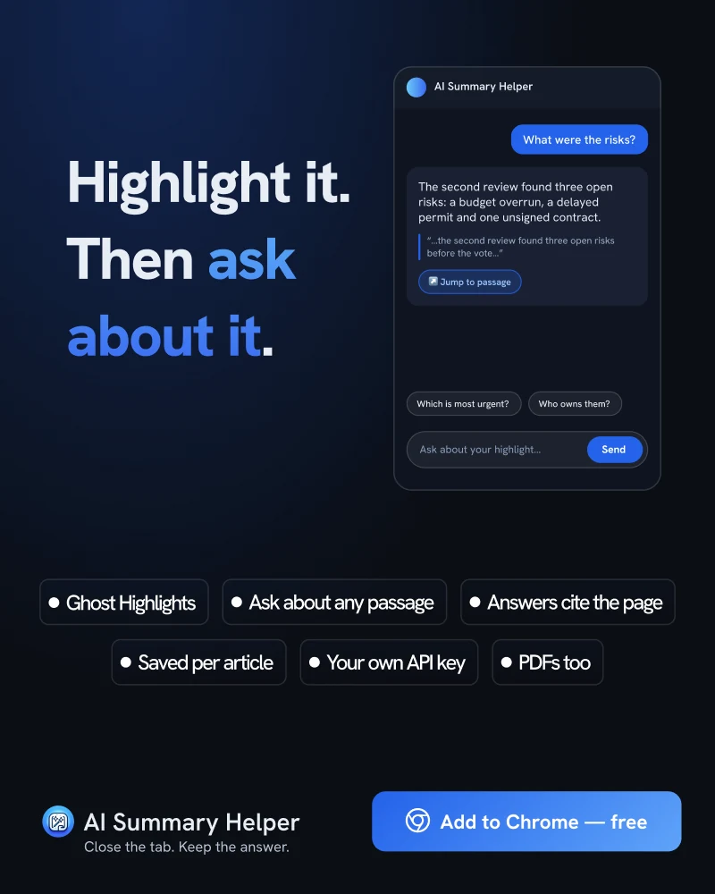

Highlighting Alone Barely Works. Ask About It Instead.
Highlighting feels like studying. The research says it mostly isn’t. The fix is small: don’t stop at the highlight, ask about it.
In 2013, Dunlosky and colleagues published a review in Psychological Science in the Public Interest that rated ten popular learning techniques by how much evidence there is that they help. Highlighting and underlining ended up in the lowest-utility group, next to rereading. Practice testing and spacing your study over time came out on top.
The unsettling part is not that highlighting is useless. It is that it feels like work. You read, you find the important sentence, you mark it, and the page fills with yellow. Something happened, so it must have helped.
Why a highlight is a weak memory
A highlight records that you found a sentence important. It does not make you do anything with it. You can mark a passage without understanding it, and you can mark it on the second pass without having thought about it on the first. The review’s point is that techniques which only expose you to material again tend to lose to techniques that make you produce something from it.
Questions are the cheap way to produce something
The same review rated one questioning technique, elaborative interrogation, as moderately useful: asking yourself why a stated fact would be true. You don’t need a quiz for it. You need a prompt that forces a short explanation in your own words.
That is what a follow-up question is, if you aim it at the right place. “What were the risks?” asked about one specific passage makes you decide what you want to know, and the answer gives you something to compare with what you expected.
Highlight, then ask
In AI Summary Helper, a highlight is only the first half. Select a passage and it stays on the page, so it is still there when you come back to the article. Then ask a follow-up about it. The answer quotes the page, and a click on the quote takes you back to the exact paragraph, so you can check that the model read it the way you did. Highlights and conversations are saved per article, which means the next visit starts where you stopped.

A routine that takes two minutes
- Highlight at most three passages. If everything is yellow, nothing is.
- Ask one question per highlight. “Why does this matter?” or “What would change if this were false?” are enough.
- Before you read the answer, say yours out loud or in one line. The comparison is where the learning happens.
None of this makes highlighting wrong. It makes it a starting point. The marker finds the passage; the question does the remembering.
AI Summary Helper is a free Chrome extension.
Add to Chrome